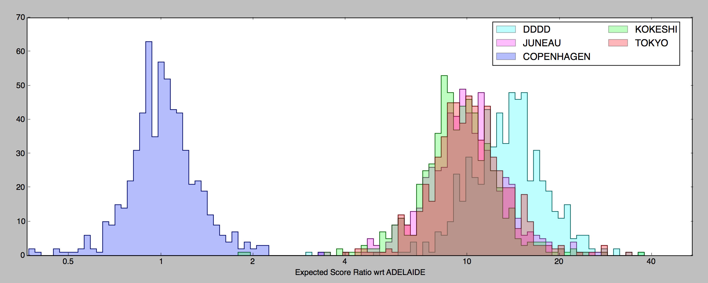
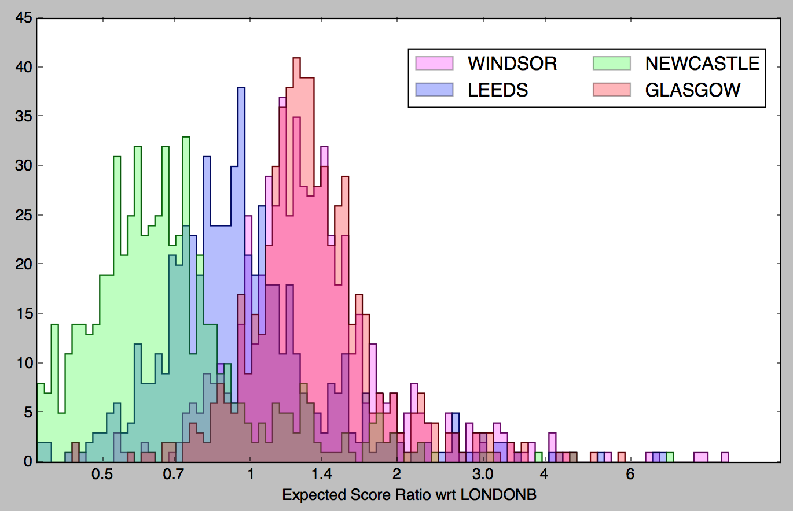
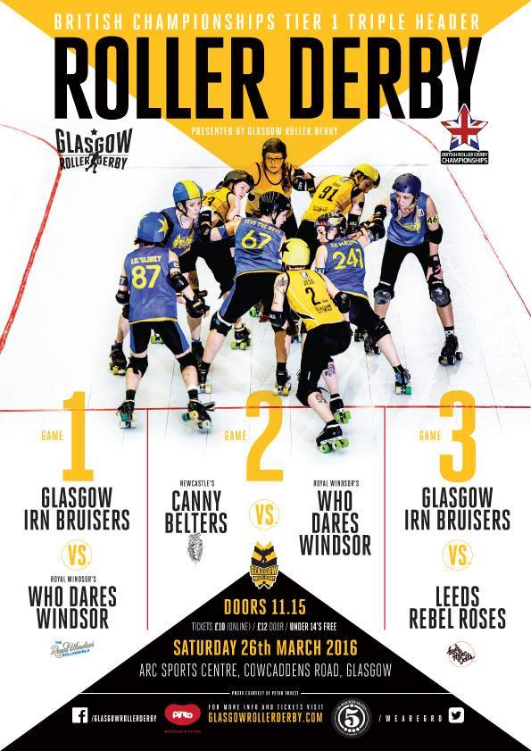
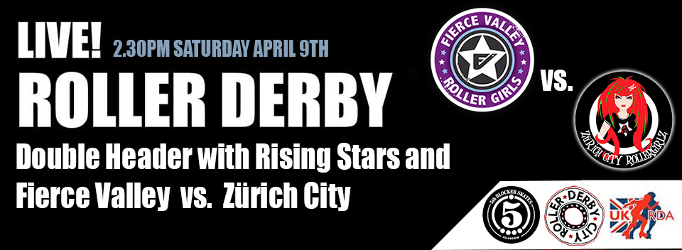
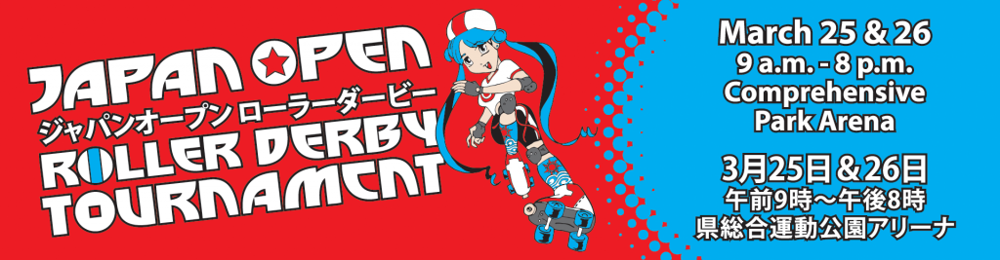
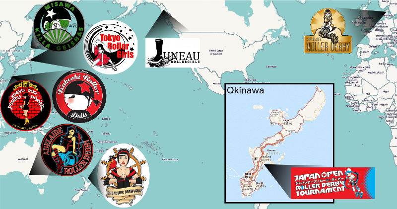
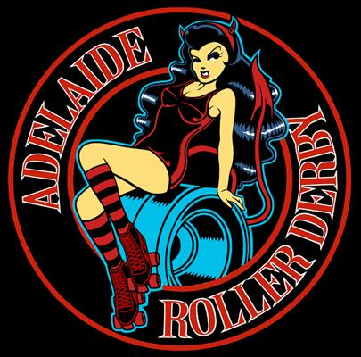
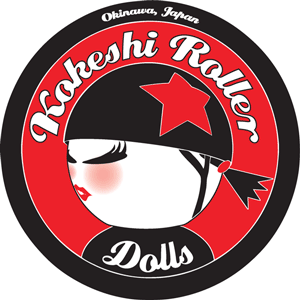

International Derby at Glasgow and Edinburgh
The Scottish Roller Derby season is hotting up, and that means more International fixtures to add to your diary. As well as Fierce Valley Roller Girls taking on the cream of Swiss Derby, both Auld Reekie Roller Girls and Glasgow Roller Derby have international bouts planned for the next few weeks.
First up, this weekend sees Auld Reekie Roller Girls' All-Stars take on Ireland's Dublin Roller Derby, for the first time. Dublin are the highest rated team in Ireland, and previously defeated ARRG's B team (back when they were called the Cannon Belles). This bout is a change of the usual for ARRG in another sense, too, as it is scheduled for an evening timeslot, beginning at 17:10, in their usual venue, Meadowbank Stadium. FlatTrackStats predicts a fairly strong win for the Edinburgh team, with a 1:2 score ratio. Auld Reekie will be wanting to keep FTS true for this one, as their momentum after defeating a very strong Newcastle Roller Girls earlier this year is strong.
A few weeks later, April 23rd, midday, Glasgow Roller Derby's Irn Bruisers are playing their first home International of the season (having been abroad themselves already, at European Smackdown). In their first bout in a new venue, Glasgow Club Bellahouston , the Bruisers will be taking on Bear City Roller Derby's Berlin Bombshells. The two teams have faced off several times before, but this will be a particularly unpredictable contest; Glasgow's roster has changed a lot from last year, and Berlin have lost their star double-thread, Master Blaster, to London. FlatTrackStats predicts a win for the away team, with a 17:10 score ratio in Berlin's favour. However, while Glasgow have played enough games this season for FTS to have a handle on their current strength, Berlin have no bouts on record this season.
This event will also be a double-header, with a "newbies" bout as warm-up to the main event. New skaters from Glasgow, as well as Auld Reekie, Ayrshire Roller Derby, Granite City Roller Derby, and more, will be forming two mash-up teams, to get experience on track. This is an ideal opportunity to see the next Scottish roller derby stars as they begin their journey in public competition. For those who feel inspired to give Roller Derby a try themselves afterward, Glasgow are also hosting a Recruitment event the very next day, April 24th., at Glasgow Club Drumoyne from 12:30.
Team Wales Skater: Buccaneer Betty Fear
Continuing our series of Team Wales Interviews, in collaboration with the UK Roller Derby Association, we present Buccaneer Betty Fear, who skated on the first Team Wales.
Tryouts are currently open for the next Team Wales, who will compete in the 2017 Roller Derby World Cup. To learn more about the Tryouts, read the FAQ, and the Application Form. The Application Form also has details of the dates and locations that Tryouts will occur, in April and May. If you would like to represent Wales internationally, then sign up to try-out!
 Fear skating in the 2014 World Cup (against New Zealand), on the right. (Courtesy Sean Murphy)
Fear skating in the 2014 World Cup (against New Zealand), on the right. (Courtesy Sean Murphy)
Buccaneer Betty Fear started out in Roller Derby with Severn Roller Torrent in 2011. She remained with Severn, skating and coaching until 2015, when she joined Tiger Bay Brawlers. She was an active member of Tiger Bay during their first and only season in British Champs. She attended the 2014 Blood & Thunder World Cup as a member of Team Wales, playing against Norway, South Africa, New Zealand and Puerto Rico. Before her retirement from Roller Derby at the end of the last season, she blogged on roller derby and other topics at It's a Hard Block Life.
So, the obvious first question is at the beginning: why try out for Team Wales?
It is so hard to write about why I tried out without relying on cliche. I think it is because it is such a big set of feelings that you run out of words... Trying out to make a National Squad was not a life experience that I thought I would have. Roller Derby is still at this special, magical time where people who have come to the sport as an adult can have dreams like making a National Squad and have the chance to turn them into reality. If you bring the work and the commitment and the courage to put yourself on the line, you can make it happen. Our sport might not be like that forever (have you seen those juniors??), so grabbing that opportunity now, while we are in this meeting place where hard work can turn you into an elite athlete... was an obvious. At the point of trying out, even the trial felt like a win and an experience.
Tell us a bit about the mental game of the tryout process. What did it feel like to go through the tryouts; and wait and then discover you had made it onto the roster?
The tryout experience was utterly unlike I expected. I thought it would be this pressurised, lonely experience where everyone was out for themselves. Nope. Within minutes of arrival the skaters trying out were forming bonds with each other. There was a palpable sense of community and support. It was like the larger Roller Derby community, but squeezed into this incredibly intense experience. During drills people were supporting each other and rooting for each other. During scrimmage we were urging each other to jam and to pivot. Physically and mentally it was one of the toughest experiences I have gone through. The trials were long, demanding and I think they were designed to ensure you were pretty exhausted by the time you scrimmaged. Waiting for the results of the first round of trials was agony, the elation of finding you had made the next round was swiftly followed by the awful realisation you had to do it all again, with more at stake... Finding out I had made the Squad was an incredibly proud moment. I had spent so long prepping for those trials... I had spent all my money hiring lonely sports halls at early hours on weekend mornings, I had trained relentlessly in the gym, I'd read pretty much every sports psychology book I could get my hands on. I'd gone all out to make the Squad. Knowing I would wear a Welsh jersey was incredible.
Training for a National Team is a significant additional investment for a skater, on top of their existing league commitments. How did you manage the time needed?
For the time I was in the Squad, there was no balance in my life. It was Roller Derby, all in. I worked, I played derby and I cross trained. I mumbled 'sorry' to my brilliantly supportive partner as I disappeared every weekend, usually on both days, for League and Squad training. I spent my money on Roller Derby travel, the gym and physio. I missed the wedding of a close friend and countless nights out and weekend adventures. At some point it stops being about you, and becomes about what you owe the Squad. You know that there were other skaters who would have done anything to have the spot on Squad you have, you owe it to them to go all out. You know that your team mates are missing birthdays and weddings and not seeing their kids in order to train, you owe it to them. And there is always the thought of not letting your Country down. You are going to skate out with a Welsh dragon on your chest, you want to show the World (and the Welsh) that we were serious about this sport.
In the lead up to the World Cup, Wales played several other games, including a kind of home-series (Road To Dallas) against Ireland, Wales and the West Indies. What do you think you and the team gained from these games?
The games we played in the lead-up to the World Cup were an incredibly experience. I think the proliferation of European (and UK-based teams) really lifted the quality of derby that was played at the World Cup. By the time we got there we had played half a dozen games as a National Squad - that makes a huge difference. Instead of working out kinks in our game at the World Cup, we had a squad who had skated together, understood each other and had developed our game. We also got to learn from the experiences of teams that had skated in the first World Cup. Scotland and Ireland had such strong, experienced Squads. Playing them beforehand gave us a chance to learn and adjust. The West Indies were great to play against as well... they were such a tough, hard-hitting Squad... it totally warmed us up (tenderised us??) for the hard-hitting play we experienced in Dallas. It also gave us a chance to experience skating as Team Wales and the whole different set of nerves that comes with that. Finally, it meant that more players had the experience of playing for their country. Not everyone made the Squad in Dallas, so some great skaters who didn't get the chance in Dallas still had the incredible experience of skating for their country.
Representing Wales in Dallas, you played against New Zealand, South Africa, Norway and Puerto Rico. What was your favourite game, and why?
Each game was a special and intense experience and created memories that will stay with my forever. South Africa were a great, physical side, having the time of their lives and their spirit was infectious. New Zealand were, well, HUGE! They were formidable and it was brilliant to have the chance to go up against them. Puerto Rico was a joy of a game - the final of the one we played at the World Cup and just a riot. But my favourite... was Norway. They were skilled, strong and relentless, but we had a moment where Wales came together and realised that everything we had worked for was now and that this was our chance. We went back out on track with a vengeance, lifting our performance. We lost, but that switch in how we were operating on track was special. It was a moment of mental resilience and this incredible sense of skaters going out there for each other. We did each other proud.
Are you planning on trying out for Team Wales again?
I've retired now - full of dreams made reality! But to anyone considering it - go. Try out. Yes: you. Imagine being able to say you were at trials for a National Squad... imagine being able to say you made it. Get your butt to training, get to the gym, get watching footage and grab yourself a derby dream. You will get something from any part of the process you go through. Go get it, skater!
We currently don't know much about the 2017 World Cup. If you had a choice, where would you like it to be (and who would you like to face on track?)
I'd love to see it in Europe: the cost for so many teams to travel to North America was prohibitive. I'd love to have it closer to home, and see more European teams able to have all their skaters there and more skaters get the chance to have their moment on track. Who would I like to see Wales face on track? It's got to be Norway. But this time with a different ending...
Men's Roller Derby World CupSchedule (timezone adjusted)
Men's Roller Derby World Cup in Calgary, 2016 is the second Men's Derby World Cup to be held. The Scottish Roller Derby Blog has a range of coverage planned, and links will be added here as they are published. For now, though, please enjoy this timezone-adjusted viewing guide (links and additional countries will be added over time!).
| TIMEZONE LINKS | ||||||||||
| UK | FRANCE | EIRE | DEUTSCHLAND | ESPANIA | SUOMI | SVERIGE | BELGIUM | DANMARK | JAPAN(日本) | AUSTRALIA |
| UK | ||||||||||||
| TRACK 1 | TRACK 2 | |||||||||||
| TIME | TEAM 1 | TEAM 2 | SCORE | ID | Stats | LiveStream | TEAM 1 | TEAM 2 | SCORE | ID | Stats | LiveStream |
| 2016-07-21 16:00 | Canada | Germany | : | Flat Track Stats | YouTube | |||||||
| 16:15 | Australia | Belgium | : | Flat Track Stats | YouTube | |||||||
| 17:00 | Wales | Mexico | : | Flat Track Stats | YouTube | |||||||
| 17:15 | France | Puerto Rico | : | Flat Track Stats | YouTube | |||||||
| 18:00 | USA | Scotland | : | Flat Track Stats | YouTube | |||||||
| 18:15 | Argentina | Chile | : | Flat Track Stats | YouTube | |||||||
| 19:00 | Finland | Ireland | : | Flat Track Stats | YouTube | |||||||
| 19:15 | England | Sweden | : | Flat Track Stats | YouTube | |||||||
| 20:00 | Netherlands | Australia | : | Flat Track Stats | YouTube | |||||||
| 20:15 | Mexico | Canada | : | Flat Track Stats | YouTube | |||||||
| 21:00 | Puerto Rico | Belgium | : | Flat Track Stats | YouTube | |||||||
| 21:15 | Spain | Germany | : | Flat Track Stats | YouTube | |||||||
| 22:00 | Chile | Italy | : | Flat Track Stats | YouTube | |||||||
| 22:15 | Finland | Scotland | : | Flat Track Stats | YouTube | |||||||
| 23:00 | England | Argentina | : | Flat Track Stats | YouTube | |||||||
| 23:15 | Ireland | Japan | : | Flat Track Stats | YouTube | |||||||
| 2016-07-22 00:00 | Mexico | Spain | : | Flat Track Stats | YouTube | |||||||
| 00:15 | Puerto Rico | Australia | : | Flat Track Stats | YouTube | |||||||
| 01:00 | Wales | Canada | : | Flat Track Stats | YouTube | |||||||
| 01:15 | France | Netherlands | : | Flat Track Stats | YouTube | |||||||
| 02:00 | Scotland | Ireland | : | Flat Track Stats | YouTube | |||||||
| 02:15 | Italy | Argentina | : | Flat Track Stats | YouTube | |||||||
| 03:00 | USA | Japan | : | Flat Track Stats | YouTube | |||||||
| 03:15 | Sweden | Chile | : | Flat Track Stats | YouTube | |||||||
| 16:00 | Belgium | France | : | Flat Track Stats | YouTube | |||||||
| 16:15 | Spain | Wales | : | Flat Track Stats | YouTube | |||||||
| 17:00 | Netherlands | Puerto Rico | : | Flat Track Stats | YouTube | |||||||
| 17:15 | Germany | Mexico | : | Flat Track Stats | YouTube | |||||||
| 18:00 | Chile | England | : | Flat Track Stats | YouTube | |||||||
| 18:15 | Ireland | USA | : | Flat Track Stats | YouTube | |||||||
| 19:00 | Sweden | Italy | : | Flat Track Stats | YouTube | |||||||
| 19:15 | Japan | Finland | : | Flat Track Stats | YouTube | |||||||
| 20:00 | Germany | Wales | : | Flat Track Stats | YouTube | |||||||
| 20:15 | Australia | France | : | Flat Track Stats | YouTube | |||||||
| 21:00 | Canada | Spain | : | Flat Track Stats | YouTube | |||||||
| 21:15 | Belgium | Netherlands | : | Flat Track Stats | YouTube | |||||||
| 22:00 | USA | Finland | : | Flat Track Stats | YouTube | |||||||
| 22:15 | Italy | England | : | Flat Track Stats | YouTube | |||||||
| 23:00 | Scotland | Japan | : | Flat Track Stats | YouTube | |||||||
| 23:15 | Argentina | Sweden | : | Flat Track Stats | YouTube | |||||||
| 2016-07-23 02:00 | Red 4th Place | Blue 4th Place | : | (41) | Flat Track Stats | YouTube | ||||||
| 02:15 | Orange 4th Place | Green 4th Place | : | (42) | Flat Track Stats | YouTube | ||||||
| 16:00 | Green 1st Place | Blue 2nd Place | : | (43) | Flat Track Stats | YouTube | ||||||
| 16:15 | Orange 1st Place | Red 2nd Place | : | (44) | Flat Track Stats | YouTube | ||||||
| 18:00 | Red 1st Place | Orange 2nd Place | : | (45) | Flat Track Stats | YouTube | ||||||
| 18:15 | Blue 1st Place | Green 2nd Place | : | (46) | Flat Track Stats | YouTube | ||||||
| 20:00 | Red 5th Place | Blue 5th Place | : | (47) | Flat Track Stats | YouTube | ||||||
| 20:15 | Orange 5th Place | Green 5th Place | : | (48) | Flat Track Stats | YouTube | ||||||
| 22:00 | Red 3rd Place | Blue 3rd Place | : | (49) | Flat Track Stats | YouTube | ||||||
| 22:15 | Orange 3rd Place | Green 3rd Place | : | (50) | Flat Track Stats | YouTube | ||||||
| 2016-07-24 00:00 | Winner Game 44 | Winner Game 43 | : | (51) | Flat Track Stats | YouTube | ||||||
| 00:15 | Loser Game 44 | Loser Game 43 | : | (52) | Flat Track Stats | YouTube | ||||||
| 02:00 | Winner Game 45 | Winner Game 46 | : | (53) | Flat Track Stats | YouTube | ||||||
| 02:15 | Loser Game 45 | Loser Game 46 | : | (54) | Flat Track Stats | YouTube | ||||||
| 16:00 | Winner Game 47 | Winner Game 48 | : | (55) | Flat Track Stats | YouTube | ||||||
| 16:15 | Loser Game 47 | Loser Game 48 | : | (56) | Flat Track Stats | YouTube | ||||||
| 18:00 | Winner Game 41 | Winner Game 42 | : | (57) | Flat Track Stats | YouTube | ||||||
| 18:15 | Loser Game 41 | Loser Game 42 | : | (58) | Flat Track Stats | YouTube | ||||||
| 20:00 | Winner Game 49 | Winner Game 50 | : | 13thPLACE | Flat Track Stats | YouTube | ||||||
| 20:15 | Loser Game 49 | Loser Game 50 | : | 15thPLACE | Flat Track Stats | YouTube | ||||||
| 22:00 | Winner Game 54 | Winner Game 52 | : | 9thPLACE | Flat Track Stats | YouTube | ||||||
| 22:15 | Loser Game 54 | Loser Game 52 | : | 11thPLACE | Flat Track Stats | YouTube | ||||||
| 2016-07-25 00:00 | Loser Game 53 | Loser Game 51 | : | 3rdPLACE | Flat Track Stats | YouTube | ||||||
| 02:00 | Winner Game 53 | Winner Game 51 | : | FINAL | Flat Track Stats | YouTube | ||||||
| Europe/London | ||||||||||||
| TIMEZONE LINKS | ||||||||||
| UK | FRANCE | EIRE | DEUTSCHLAND | ESPANIA | SUOMI | SVERIGE | BELGIUM | DANMARK | JAPAN(日本) | AUSTRALIA |
| FRANCE | ||||||||||||
| PISTE 1 | PISTE 2 | |||||||||||
| TEMPS | ÉQUIPE 1 | ÉQUIPE 2 | POINTS | ID | Stats | LiveStream | ÉQUIPE 1 | ÉQUIPE 2 | POINTS | ID | Stats | LiveStream |
| 2016-07-21 17:00 | Canada | Germany | : | Flat Track Stats | YouTube | |||||||
| 17:15 | Australia | Belgium | : | Flat Track Stats | YouTube | |||||||
| 18:00 | Wales | Mexico | : | Flat Track Stats | YouTube | |||||||
| 18:15 | France | Puerto Rico | : | Flat Track Stats | YouTube | |||||||
| 19:00 | USA | Scotland | : | Flat Track Stats | YouTube | |||||||
| 19:15 | Argentina | Chile | : | Flat Track Stats | YouTube | |||||||
| 20:00 | Finland | Ireland | : | Flat Track Stats | YouTube | |||||||
| 20:15 | England | Sweden | : | Flat Track Stats | YouTube | |||||||
| 21:00 | Netherlands | Australia | : | Flat Track Stats | YouTube | |||||||
| 21:15 | Mexico | Canada | : | Flat Track Stats | YouTube | |||||||
| 22:00 | Puerto Rico | Belgium | : | Flat Track Stats | YouTube | |||||||
| 22:15 | Spain | Germany | : | Flat Track Stats | YouTube | |||||||
| 23:00 | Chile | Italy | : | Flat Track Stats | YouTube | |||||||
| 23:15 | Finland | Scotland | : | Flat Track Stats | YouTube | |||||||
| 2016-07-22 00:00 | England | Argentina | : | Flat Track Stats | YouTube | |||||||
| 00:15 | Ireland | Japan | : | Flat Track Stats | YouTube | |||||||
| 01:00 | Mexico | Spain | : | Flat Track Stats | YouTube | |||||||
| 01:15 | Puerto Rico | Australia | : | Flat Track Stats | YouTube | |||||||
| 02:00 | Wales | Canada | : | Flat Track Stats | YouTube | |||||||
| 02:15 | France | Netherlands | : | Flat Track Stats | YouTube | |||||||
| 03:00 | Scotland | Ireland | : | Flat Track Stats | YouTube | |||||||
| 03:15 | Italy | Argentina | : | Flat Track Stats | YouTube | |||||||
| 04:00 | USA | Japan | : | Flat Track Stats | YouTube | |||||||
| 04:15 | Sweden | Chile | : | Flat Track Stats | YouTube | |||||||
| 17:00 | Belgium | France | : | Flat Track Stats | YouTube | |||||||
| 17:15 | Spain | Wales | : | Flat Track Stats | YouTube | |||||||
| 18:00 | Netherlands | Puerto Rico | : | Flat Track Stats | YouTube | |||||||
| 18:15 | Germany | Mexico | : | Flat Track Stats | YouTube | |||||||
| 19:00 | Chile | England | : | Flat Track Stats | YouTube | |||||||
| 19:15 | Ireland | USA | : | Flat Track Stats | YouTube | |||||||
| 20:00 | Sweden | Italy | : | Flat Track Stats | YouTube | |||||||
| 20:15 | Japan | Finland | : | Flat Track Stats | YouTube | |||||||
| 21:00 | Germany | Wales | : | Flat Track Stats | YouTube | |||||||
| 21:15 | Australia | France | : | Flat Track Stats | YouTube | |||||||
| 22:00 | Canada | Spain | : | Flat Track Stats | YouTube | |||||||
| 22:15 | Belgium | Netherlands | : | Flat Track Stats | YouTube | |||||||
| 23:00 | USA | Finland | : | Flat Track Stats | YouTube | |||||||
| 23:15 | Italy | England | : | Flat Track Stats | YouTube | |||||||
| 2016-07-23 00:00 | Scotland | Japan | : | Flat Track Stats | YouTube | |||||||
| 00:15 | Argentina | Sweden | : | Flat Track Stats | YouTube | |||||||
| 03:00 | Red 4th Place | Blue 4th Place | : | (41) | Flat Track Stats | YouTube | ||||||
| 03:15 | Orange 4th Place | Green 4th Place | : | (42) | Flat Track Stats | YouTube | ||||||
| 17:00 | Green 1st Place | Blue 2nd Place | : | (43) | Flat Track Stats | YouTube | ||||||
| 17:15 | Orange 1st Place | Red 2nd Place | : | (44) | Flat Track Stats | YouTube | ||||||
| 19:00 | Red 1st Place | Orange 2nd Place | : | (45) | Flat Track Stats | YouTube | ||||||
| 19:15 | Blue 1st Place | Green 2nd Place | : | (46) | Flat Track Stats | YouTube | ||||||
| 21:00 | Red 5th Place | Blue 5th Place | : | (47) | Flat Track Stats | YouTube | ||||||
| 21:15 | Orange 5th Place | Green 5th Place | : | (48) | Flat Track Stats | YouTube | ||||||
| 23:00 | Red 3rd Place | Blue 3rd Place | : | (49) | Flat Track Stats | YouTube | ||||||
| 23:15 | Orange 3rd Place | Green 3rd Place | : | (50) | Flat Track Stats | YouTube | ||||||
| 2016-07-24 01:00 | Winner Game 44 | Winner Game 43 | : | (51) | Flat Track Stats | YouTube | ||||||
| 01:15 | Loser Game 44 | Loser Game 43 | : | (52) | Flat Track Stats | YouTube | ||||||
| 03:00 | Winner Game 45 | Winner Game 46 | : | (53) | Flat Track Stats | YouTube | ||||||
| 03:15 | Loser Game 45 | Loser Game 46 | : | (54) | Flat Track Stats | YouTube | ||||||
| 17:00 | Winner Game 47 | Winner Game 48 | : | (55) | Flat Track Stats | YouTube | ||||||
| 17:15 | Loser Game 47 | Loser Game 48 | : | (56) | Flat Track Stats | YouTube | ||||||
| 19:00 | Winner Game 41 | Winner Game 42 | : | (57) | Flat Track Stats | YouTube | ||||||
| 19:15 | Loser Game 41 | Loser Game 42 | : | (58) | Flat Track Stats | YouTube | ||||||
| 21:00 | Winner Game 49 | Winner Game 50 | : | 13thPLACE | Flat Track Stats | YouTube | ||||||
| 21:15 | Loser Game 49 | Loser Game 50 | : | 15thPLACE | Flat Track Stats | YouTube | ||||||
| 23:00 | Winner Game 54 | Winner Game 52 | : | 9thPLACE | Flat Track Stats | YouTube | ||||||
| 23:15 | Loser Game 54 | Loser Game 52 | : | 11thPLACE | Flat Track Stats | YouTube | ||||||
| 2016-07-25 01:00 | Loser Game 53 | Loser Game 51 | : | 3rdPLACE | Flat Track Stats | YouTube | ||||||
| 03:00 | Winner Game 53 | Winner Game 51 | : | FINAL | Flat Track Stats | YouTube | ||||||
| Europe/Paris | ||||||||||||
International and National Derby for Easter: The Review
This weekend saw two big Roller Derby Events - one internationally important, the Japan Open Roller Derby Tournament in Okinawa, and one nationally significant, a triple-header fixture for the British Championships Premier Tier in Glasgow. Due to the time difference between Japan and the UK, as the first was just finishing, the second was almost about to start, so if you weren't planning on sleeping for 17 hours, you could have spent all that time continuously experiencing roller derby!
We'll start with the International event in this review (you can skip to Glasgow by clicking here).
As we reported in our preview, the Japan Open Roller Derby Tournament was an important first for Asia-Pacific Roller Derby, bringing together teams from Australia, New Zealand, Japan, Alaska and Denmark in a two day derby event hosted by Kokeshi Roller Dolls. Our timezone-adjusted and localised Viewing Guide now contains specific links to each bout in the video feed, so you can jump to any particular game just by clicking on the relevant YouTube link. The Viewing Guide also contains all of the scores for all bouts.
It's fair to say that, in general, the tournament went as expected, with respect to game predictions. Adelaide Roller Derby, coming in as the expected winners by FTS rating, were awarded the Tournament Championship for the A (WFTDA Sanctioned) Tier, having defeated all three Japan-based leagues (Tokyo, Kokeshi and Devil Dog) by considerable margins. Copenhagen, who were also expected to have done well, exceeded expectations, both in terms of their win margins against the Japan-based teams, but also against Adelaide themselves. This latter bout was a last minute addition to the schedule, but was fast-tracked for WFTDA Sanctioning, and will count for Copenhagen's ranking. As the Danish team defeated Adelaide, who reside at a much higher WFTDA rank in the current rankings, we expect Copenhagen to shoot up the tables - their FTS rating has already shifted by more than 100 points as a result of their performance at the Open!
In terms of the other teams, perhaps the most impressive single performance in terms of endurance was that of Alaska's Juneau Rollergirls, who brought only a roster of 6 skaters to compete. Despite this significant disadvantage, they won their first two bouts (against Devil Dog Derby Dames, and Tokyo Roller Girls) convincingly, only faltering due to fatigue in their final game against hosts Kokeshi Roller Dolls. While Juneau have lost FTS rating "on paper" on their performance, it's clear that their actual ability as a team is significant, and they are underranked and underrated by WFTDA and FTS currently.
In the B-tier, it was New Zealand's Pirate City Rollers who topped the board, with their B-team, the Broadside Brawlers, defeating both the Japan Roller Derby Association's exhibition team, Nippon Senbatsu; and Misawa Killa Geishas by very comfortable win ratios. Given that this was the Brawlers' first ever international derby, their performance was especially impressive. The win against Misawa also gives the New Zealand B-team a more solid FTS rating for the first time.
The Japan-based teams - Okinawa's Kokeshi Roller Dolls and Devil Dog Derby Dames, Tokyo's Tokyo Roller Girls, and Misawa's Killa Geishas of Misawa - did not surprise in their performances, remaining generally fairly comparable to each other (although there were no direct bouts between them). With very limited opportunities to play different teams, Roller Derby in Japan needs to grow more leagues in order to become more competitive - one reason why the appearance of the new Tokyo team, KAMIKAZE BADASS, is so important. The Japan Roller Derby Association's Nippon Senbatsu, showed a lot of spirit on track, but clearly had the lowest experience of any teams playing (in their first game, especially, they picked up a lot of penalties for failure to reform and track-cuts in situations where a more experienced team would have read the game naturally).
Overall, the significance of the Japan Open was more than just symbolic - it also genuinely represented a chance for the teams competing to play leagues which they would never normally get to compete against in other contexts. With international Derby becoming increasingly developed, it's especially important for these kind of events to continue to take place, in order to build the strength of Roller Derby, both in terms of skill, but also in terms of Community, worldwide.
There were also several interviews with each competing team (except the JRDA's Exhibition Team, Nippon Senbatsu), which we've hunted down the timecodes for (click the links for each interview):
Adelaide Roller Derby (1) https://youtu.be/FkaGqkdgk9c#t=4h13m10s (2) https://youtu.be/udx3lyF80dE#t=6h17m29s Copenhagen Roller Derby (1) https://youtu.be/FkaGqkdgk9c#t=2h48m36s (2) https://youtu.be/FkaGqkdgk9c#t=10h22m36s Devil Dog Derby Dames (1) https://youtu.be/FkaGqkdgk9c#t=5h56m59s (2) https://youtu.be/FkaGqkdgk9c#t=8h47m35s (3) https://youtu.be/udx3lyF80dE#t=1h45m15s (4) https://youtu.be/udx3lyF80dE#t=3h10m15s Juneau Rollergirls https://youtu.be/FkaGqkdgk9c#t=5h51m34s Kokeshi Roller Dolls https://youtu.be/FkaGqkdgk9c#t=2h53m7s Misawa Killa Geishas (1) https://youtu.be/FkaGqkdgk9c#t=1h27m51s (2) https://youtu.be/FkaGqkdgk9c#t=8h51m45s Pirate City Rollers (1) https://youtu.be/FkaGqkdgk9c#t=7h25m55s (2) https://youtu.be/udx3lyF80dE#t=7h45m26s Tokyo Roller Girls (1) https://youtu.be/FkaGqkdgk9c#t=4h16m29 (2) https://youtu.be/FkaGqkdgk9c#t=10h19m14s Spectator (1) https://youtu.be/udx3lyF80dE#t=2h26m30s (2) https://youtu.be/udx3lyF80dE#t=4h48m55s (3) https://youtu.be/udx3lyF80dE#t=4h52m47s
And, just for the statistics fans amongst you, this is the estimated strength of all of the A-Tier Tournament competitors (calculated via Bayesian monte-carlo), relative to Adelaide. (Juneau are a bit diffuse due to their short roster causing their last game to be atypical of their actual ability, due to exhaustion.)

Closer to Home, Glasgow Roller Derby hosted their second fixtures in the British Championships Premier Tier. A triple-header, this saw GRD and Newcastle play Royal Windsor Rollergirls, followed by GRD taking on Leeds Roller Dolls.
After losing both of their games against Newcastle and London in their first hosted event, Glasgow Roller Derby had to take at least one win in this fixture to stand a chance of avoiding relegation from the Premier Tier. Since then, and their performance in the European Smackdown, Glasgow have clearly been developing the cohesion of their new roster, and their performance was somewhat improved in the two games they played - enough to provide a solid win over Royal Windsor in the first game of the day, with the final score standing at 203 GRD to 179 RWRG.
With a 30 minute break between games, a fresh Newcastle Roller Girls continued their win streak in the Premier tier against Royal Windsor, pulling out a very convincing win against the southern English team, 326 to 166. This performance by Newcastle reinforces the signal from the previous game that they have increased in strength over the last year - and places them in good stead for their coming attendance at the US Beach Brawl tournament.
Leeds Roller Dolls capped off the day by pulling off a convincing victory over the hosts Glasgow, 198 to 122, despite a starting roster of only 11, and penalty issues in the second period.
These results mean that Newcastle Roller Girls retain, for the moment, their place at the top of the Premier Tier table, with Leeds Roller Dolls just below them on points difference. With the next British Champs fixtures seeing Newcastle play London Roller Girls (B) (in Newcastle's Walker Activity Dome, 2April) and then Leeds Roller Dolls (also in Newcastle, 23April), the top of the table is getting exceptionally competitive.
With the number of games played so far, there's just enough data to perform a statistical inference on the actual strength of the Premier Tier teams (plotted here, relative to London Rollergirls B). Although there's not enough data for thin peaks, we can see that the evidence suggests that Newcastle and Leeds are both capable of taking the Championship this year, with a significant fraction of their possible strengths above that of London's.

Meanwhile, Glasgow's next bout will be international, as they take on Berlin Bombshells on the 23rd of April in their new venue in Bellahouston. With Berlin having recently lost star double-threat Master Blaster to London Rollergirls, this game will be a chance to see both how Glasgow continue to grow back as a team, and how dependent Berlin was on their most famous skater!
Team Wales Manager Dorkmistress
Earlier this year, we interviewed the outgoing members of the Team Scotland Management and Coaching Team, in collaboration with the UKRDA. In an ongoing collaboration with UKRDA, we're happy to present interviews with Team Wales' Management and Coaching team, starting with Team Manager: Dorkmistress.
(You can apply to try out to skate for Team Wales here: https://docs.google.com/forms/d/1QhY0y8WdT_D7O5LPclsMFEdi1ZMoSdJ-V7CaERtOLkQ/viewform , with a FAQ concerning tryouts here: https://docs.google.com/document/d/19Tw2QvnOzoU3PcD9U4SYPAOLr6tRESI085zvigrlPH4/edit?pref=2&pli=1 )
Dorkmistress has had a long and varied time in Roller Derby. Starting in 2011 with the Cardiff Roller Collective, as a skater and announcer, she has since moved to Swansea City Roller Derby (in 2013), and moved into refereeing for both Swansea and the South West Silures in 2014. She was Team Manager for Team Wales Roller Derby for the 2014 Blood & Thunder Roller Derby World Cup, and continues in this role, having been re-elected in the post earlier this year. Her derby CV is extensive, including over 60 games refereed, and 100 announced, over her 5 year period in the sport.

In common with other Team Wales roles, you're returning to the role of Manager from the last iteration of the National Team. What led you to decide to continue in the role?
It's a big decision - I loved the last two years but it's a fairly big commitment. We learnt so much in the last two years, starting the team from scratch and I wanted to make sure that I could see these lessons implemented. I know how I want to do things differently and think that I can do a much better job this time around. Plus, I'm not ready to watch Team Wales on track without being part of it! When I was thinking about how to answer these questions I looked back on the Team Wales Facebook page and seeing the support, encouragement and emotion on there made me remember what an incredible experience and honour it is to be part of Team Wales, and to be part of a team of such amazing people. And I still regularly look at the pictures of the Team Wales supporters gang - those crazy laydees from Neath Port Talbot, the supporters who travelled to Belgium and Dallas with their inflatables and daffodil hats, our own official leader of chants, Rhys Jones. Who wouldn't want to be part of that?
Managing a National team is quite a complex task, with many things to keep track of (and you've technically managed 2 Nations, what with Team Sealand). What do you think are the most important aspects of the job? (And coping with the workload?)
Being able and willing to keep all the plates you are spinning in the air is probably the key to success! And you can only achieve that with delegation and lots of communication. I worked with the skaters and other members of the management team to set up committees to cover key areas, like fundraising and events, and each group had an action plan and regular meetings. I did live on Facebook and Google Docs for the year, and ended up missing training a fair bit, but I wanted to make that commitment to make sure Team Wales was in the best place possible in Dallas. I have a busy real life job, but that's given me lots of time management and project planning skills, which were essential. Team Sealand was much easier, I just had to sort out travel and bout contracts ;-)
Last time around, a big part of the Management for most National teams was simply raising the funds to make it to Dallas. How did you guys go about managing the process, and finding new ways to get funds?
We were really clear that fundraising was the responsibility of everyone in Team Wales, and everyone got involved. We had huge support from leagues from Newcastle to LRG to Severn Roller Torrent to Swansea City Roller Derby, giving us raffle proceeds, holding fundraising events and giving us stall space at their events. We had people donate money, we sold a LOT of t-shirts, we held kare-oke nights, we made loom bands, we had a baby picture competition, we had face painting at our games - literally any way we could get money out of people, we tried. We also decided to hold the fabulous Road to Dallas tournament in Newport in October 2014, hosting Teams Scotland, Ireland and West indies. Fundraising was constant - the challenge was to make it fun and to try and not just ask the same people all the time....same as most leagues face. It will be easier in some ways this time - we have our merch in place and an existing fan base - but harder in a sport where we have more leagues trying to fundraise from the same audience.
What've you learned from the last time around that you'll be applying this time, to improve Team Wales' management?
Have you got enough space in this blog? We're starting in a better position - we have a clear identity and design, so we will have t-shirts and merch available sooner and more options for our supporters. Do more on social media - keep everyone updated on our journey towards the World Cup. Delegate more and more completely - easier when you know what you are trying to achieve and know all the details and issues that need to be considered. Get the right partners and sponsors so things are as easy and cheap as possible for us. Play more games - we had 9 months from team selection to the World Cup last time and that wasn't enough - one reason we were keen to kick off the National Squad selection process in the UK. Everyone's going to freak out a bit on this journey - we are all allowed a freakout, just hopefully not at the same time. Sleep more and stop looking at Facebook messages at midnight and then again at 7am. Don't share a room with morning people if you are a night owl - probably the hardest and most important lesson I learnt.....
You've also announced in many places, including at the first Men's World Cup. How would you compare your two World Cup experiences?
Very different experiences because they were very different sized events on very different continents. The Men's World Cup memories I have will last me a lifetime. It was my first taste of international roller derby and it was small and perfectly formed - the announcing team was incredible and the size of the schedule and event meant you could keep up with all of the action and see all of the teams and skaters sat next to you. I got to hang out with Team Japan and watch Team Argentina and nearly lost my voice shouting at Team Wales scoring points against Team USA - and those moments were all in the same room, right next to each other. It was the first time I got to introduce the Welsh National Anthem and I can still feel the hairs rising on the back of my neck. I also got to do the in-house announcement for that Wales V Australia game and the emotion in the venue at that last jam overwhelmed me so much I cried for 30 minutes at the end of the game - us announcers feed off that crowd emotion and I have never felt anything like it. It was such a personal experience I am not sure anything will ever really be the same as that. I'm desperately proud to have been part of the delivery of that event and I am more than a bit heartbroken that I can't go to Calgary this July - but I know Team Wales will make me and everyone else even prouder than they did that day in Birmingham.
The Blood and Thunder World Cup was just so much bigger. When we arrived at the airport the customs guys said 'you here for the roller derby?'. Thats because they had already seen so many skaters and fans. 30 teams is a lot of people, three tracks in this massive room in a ginormous exhibition centre in America? Much bigger than the Futsal! If I went to the team room (each team had its own room! what?!) it was a good 5 minute walk, which, by the end of the day, felt like 5 miles. We'd gone to the European Roller Derby Tournament in Belgium and shared the underside of the bleachers seating with 7 other National teams and the next thing you knew we had a Team Support person, and a room and all sorts of things to make our time easier. I missed announcing though, you watch games in a different way and I didn't see a lot of other games as I was busy on the merch stall or sorting transport or one of the many other things that went on. And I missed being part of the team that showed you the event and explained what was going on. However, nothing in my life will ever compare to being able to walk out on the biggest Roller Derby stage in the world as part of Team Wales in the Parade of Nations. I can't even now, all this time later, put that experience and feeling into words. It's something I will forever be proud of and proud to have been part of.
When you were interviewed last time around, you noted that you were most looking forward to Team Wales playing "teams from far off places". In the event, Wales played South Africa, New Zealand, Norway and Puerto Rico, at least three of which probably count! If you could play any teams (announced or not) in the upcoming World Cup, what would they be?
Norway are going down this time ;-) It was almost impossible to watch the game - seeing the team play out of their skins to claw back to within reaching distance for Norway to pull away just at the end. I'd love to see us play Argentina, they were incredible in Dallas and I think the South American teams are going to go to the next World Cup with a huge step up in skills and strategy. And there will be teams from new places - Iceland, definitely, maybe even Egypt, or Russia [where there are teams, but no established National infrastructure, yet]! We think and talk a lot about European Derby and Derby in North America, but the World Cup is the only place we get to see derby developing as a Global sport, and thats going to be really evident in the next World Cup for sure.
(And if you have a place you'd like the World Cup to be, for any reason…)
Would love it to be in Japan as I have always wanted to go there but even pretending I'd have to fundraise for that makes me want to cry! Very boringly I'd like it to be in Europe next - I think that showing as many people as possible international level derby inspires skaters and so would like to see it move around continents to give everyone that experience - watching it on the internet isnt quite the same. So next time Australia or New Zealand. Then South America or Asia or Africa. A true world tour!
ジャパンオープン トーナメント
主催者は、Kokeshi Roller Dollsで、ウーマンフラットトラックローラーダービー協会（WFTDA）は、このトーナメントを認可し、 WFTDAのルールが適用されます。
ローラーダービーは日本でも、真新しい競技と言う訳ではありません。とは言え21世紀の新しいローラーダービーは、日本で、2010年に始まりました。 東京と沖縄の米軍基地内のアメリカ人がTokyo Roller Girls と、Kokeshi Roller Dollsを設立しました。 2016年現在では、東京、三沢、沖縄にローラーダービーのチームがあります。 ちなみに、東京ローラーガールズは日本人のスケーターを募集しています！ 他にも、東京にKAMIKAZE BADASSと呼ばれるチームもあります。 これらのチームのすべてがWFTDAのルールを使用し、Kokeshi Roller Dolls、Devil Dogs Derby Dames、Tokyo Roller Girls はWFTDAメンバーです。
トーナメントに参加するチームは以下の通りです：
Adelaide Roller Derby. オーストラリア、アデレード、のチームです。2007年に設立されました。WFTDAのメンバーであります。 統計では、彼らがトーナメントで最強のチームであると思われます。
Pirate City Rollers ニュージーランド、オークランドの、チームです。2006年に設立南半球で設立された最初のチームです。彼らもまWFTDAのメンバーです。なお、このトーナメントに参加するのは、B-チームです。
Devil Dog Derby Dames と Kokeshi Roller Dolls この２チームは、沖縄のチームで、米軍基地でアメリカ人によって設立されました。両チームともWFTDAメンバーです。
Tokyo Roller Girls 東京を拠点としています。彼女達は多くのチームを持っています。例えば、日本人だけのチーム「neon roller monsters」。彼らもまたWFTDAのメンバーです。A-チームが参加します。
Misawa Killa Geishas アメリカ人によって設立された、Misawa Killa Geishas、Aーチームが参加します。
Copenhagen Roller Derby デンマーク、コペンハーゲン、のチームです。このトーナメントは、彼女達に取って、初めてのヨーロッパ以外への、遠征です。彼女達も又WFTDAのメンバーです。
Juneau Roller Girls 米国アラスカ州、ジュノーのチームです。わずか6名のスケーターで、参加します。 （通常は10〜15人！）WFTDAのメンバーです。
一般社団法人日本ローラーダービー協会(JRDA) 一般社団法人日本ローラーダービー協会を後援しています。 また、日本選抜がこのチームが、参加します。このチームについては、詳しい事は分かりません。 他の日本のチームはJRDAのメンバーでは、ありません。
HELL OH KITTY と Nip in Éire: 助けてもらいありがとう。
Triple Champs at Glasgow!
While this Friday and Saturday feature Asia's first ever WFTDA tournament, the time difference means that there's also plenty of time to experience the best that the United Kingdom also has.
After opening the British Championships Premier Tier with a double header only a few weeks ago, Glasgow Roller Derby are topping their own event with a Triple Header of Premier Tier bouts this Saturday, 26th March.
Starting at 11:15, in Glasgow Caledonian University's ARC Sports Centre, Glasgow themselves will be taking on both Royal Windsor Roller Girls' "Who Dares Windsor" and Leeds Roller Dolls' "Leeds Rebel Roses", while Newcastle Rollergirls will be returning to the North to also take on Royal Windsor.
 On points difference, Newcastle are currently topping the table; although drawn with Leeds and London on actual wins. They'll be looking to take a second win, solidifying their position at the top; but of course Leeds themselves are in the same position to take the lead. Meanwhile, both Royal Windsor and Glasgow themselves need to pick up wins to move up the table. With two games each, they'll be looking to pick up as many points as possible. (Winning both games would move either team to the top of the table in a single fixture!)
Royal Windsor spoke to us about their feelings on the challenge. "We have been training super hard for this weekend. It is a momentous occasion for us as we want to make our mark on this year's premier tier. We are looking forward to putting all our hard work into practice and hopefully coming away with a result that the team can be proud of."
Flat Track Stats expects Glasgow to triumph over Royal Windsor with about a 3:1 score ratio, and over Leeds about 3:2; with Newcastle predicted a 5:3 win over Royal Windsor. Of course, the last fixture in Glasgow completely defied the statistics, so everything is definitely to play for!
Hosts Glasgow Roller Derby's Sarah McMillan told us: "Glasgow is really excited to be hosting the British Championships Premier Tier games this weekend! 3 of thee highest level of UK roller derby games will be played in one day, here in Glasgow!! Our All-star team, the Irn Bruisers will be playing two games in one day - first up, we're playing Royal Windsor and the last game of the day will be us against our old friends Leeds! The other game is Table toppers Newcastle playing Royal Windsor, so it promises to be a really exciting day! More information and advanced tickets are available on the GRD website - www.glasgowrollerderby.com with a 10% discount on a ticket for blog readers using code SCOTBLOG"
International Roller Derby in the Forth Valley!
On Saturday 9th of April, Fierce Valley Roller Girls will host their first home game of the year, and against international opposition in the shape of Zurich City Rollergirlz. The game will be the second in a double header, and marks just the second time that FVRG have faced an international league, after taking on Oslo Roller Derby back in October 2013. Formed in 2009, Zurich City Rollergirlz was Switzerland’s first roller derby league and became a full WFTDA member league towards the end of 2015. Currently ranked at 95 in Europe by Flat Track Stats while FVRG sits at 127, this promises to be a close and hard fought game.
 The double header will begin with a Rising Stars game featuring newer skaters from leagues across Scotland, many of whom will be making the public skating debut. The leagues represented include Ayrshire Roller Derby, Auld Reekie Roller Girls, Bairn City Rollers, Doonhame Derby Dolls, Dundee Roller Girls, Glasgow Roller Derby, Granite City Roller Girls, Inverness City Roller Derby, Lothian Derby Dolls and New Town Roller Girls. The event takes place at Grangemouth Sports Centre with doors at 14:30 and the first whistle for the Rising Stars at 15:00. FVRG then take on Zurich from 17:15. Tickets are £5 (+ booking fee) in advance here, or £7 on the door. Join the Facebook event.
The Big O 2016: Schedule (Timezones)
The Big O 2016 is the latest iteration of Emerald City Roller Derby's yearly invitational Tournament. In order to help you find the right time to watch bouts, we've constructed this handy guide.
Colour-coding shows the type of bout (Womens,Mens,Junior). Video links link to ECRG's live stream, unless the bout archive is present for completed bouts (in which case, we link directly to the archived video)! At this point, all bouts, except St Louis v Puget, and the two bouts screened on ESPN3 in the USA, are links to the YouTube archive.
Click the name of the region to get a link with times for that timezone.
| TIMEZONE LINKS | ||
| UK | HELSINKI | VICTORIA |
| UK | |||||||||||||||
| TRACK 1 | TRACK 2 | TRACK 3 | |||||||||||||
| TIME | TEAM 1 | TEAM 2 | SCORE | Stats | LiveStream | TEAM 1 | TEAM 2 | SCORE | Stats | LiveStream | TEAM 1 | TEAM 2 | SCORE | Stats | LiveStream |
| 2016-04-29 18:00 | Arch Rival | Terminal | 308:126 | Flat Track Stats | ECRG | Rose:B | Texas:B | 160:138 | Flat Track Stats | ECRG | |||||
| 18:30 | Lane County | Vancouver | 42:322 | Flat Track Stats | ECRG | ||||||||||
| 20:00 | Victorian | Bay Area | 324:35 | Flat Track Stats | ECRG | Denver:B | Angel:B | 230:162 | Flat Track Stats | ECRG | |||||
| 20:30 | Minnesota | San Diego | 178:319 | Flat Track Stats | ECRG | ||||||||||
| 22:00 | Texas | Rat | 165:122 | Flat Track Stats | ECRG | Fort Collins | Angel | 175:176 | Flat Track Stats | ECRG | |||||
| 22:30 | Rose | Minnesota | 250:127 | Flat Track Stats | ECRG | ||||||||||
| 2016-04-30 00:00 | Angel | Denver | 214:81 | Flat Track Stats | ECRG | Rocky | Terminal | 127:219 | Flat Track Stats | ECRG | |||||
| 00:30 | Emerald | Santa Cruz | 195:168 | Flat Track Stats | ECRG | ||||||||||
| 02:00 | St. Louis | Puget | 240:75 | Flat Track Stats | ECRG | Windy | Auld Reekie | 244:123 | Flat Track Stats | ECRG | |||||
| 02:30 | Texas | Portland | 216:122 | Flat Track Stats | ECRG | ||||||||||
| 04:00 | Victorian | Texas | 130:114 | Flat Track Stats | ECRG | Helsinki | Santa Cruz | 210:151 | Flat Track Stats | ECRG | |||||
| 04:30 | Rose | Angel | 183:156 | Flat Track Stats | ECRG | ||||||||||
| 18:00 | Emerald | Fort Collins | 151:180 | Flat Track Stats | ECRG | Puget | Denver | 346:90 | Flat Track Stats | ECRG | |||||
| 18:30 | Minnesota | Terminal | 269:174 | Flat Track Stats | ECRG | ||||||||||
| 20:00 | Arch Rival | Rat | 188:120 | Flat Track Stats | ECRG | Rose:B | Denver:B | 196:231 | Flat Track Stats | ECRG | |||||
| 20:30 | Texas:B | Angel:B | 181:114 | Flat Track Stats | ECRG | ||||||||||
| 22:00 | Denver | Bay Area | 174:186 | Flat Track Stats | ECRG | Emerald | Windy | 96:282 | Flat Track Stats | ECRG | |||||
| 22:30 | San Diego | Texas | 213:282 | Flat Track Stats | ECRG | ||||||||||
| 2016-05-01 00:00 | Victorian | Rose | 150:138 | Flat Track Stats | ECRG | Rocky | Santa Cruz | 171:194 | Flat Track Stats | ECRG | |||||
| 00:30 | Minnesota | Vancouver | 73:294 | Flat Track Stats | ECRG | ||||||||||
| 02:00 | Texas | Angel | 63:145 | Flat Track Stats | ECRG | Rose | Santa Cruz | 104:217 | Flat Track Stats | ECRG | |||||
| 02:30 | Helsinki | Rat | 111:246 | Flat Track Stats | ECRG | ||||||||||
| 04:00 | St. Louis | Portland | 227:119 | Flat Track Stats | ECRG | Lane County | Denver | 193:311 | Flat Track Stats | ECRG | |||||
| 04:30 | Sacred | Auld Reekie | 261:139 | Flat Track Stats | ECRG | ||||||||||
| 18:00 | Sacred | Windy | 218:157 | Flat Track Stats | ECRG | Emerald | Santa Cruz | 60:238 | Flat Track Stats | ECRG | |||||
| 18:30 | Fort Collins | Rose | 202:98 | Flat Track Stats | ECRG | ||||||||||
| 20:00 | Texas | Bay Area | 149:84 | Flat Track Stats | ECRG | Denver | Vancouver | 133:312 | Flat Track Stats | ECRG | |||||
| 20:30 | St.Louis | San Diego | 377:60 | Flat Track Stats | ECRG | ||||||||||
| 22:00 | Victorian | Angel | 183:94 | Flat Track Stats | ECRG | Lane County | Minnesota | 130:271 | Flat Track Stats | ECRG | |||||
| 22:30 | Helsinki | Terminal | 173:154 | Flat Track Stats | ECRG | ||||||||||
| 2016-05-02 00:00 | Rose | Denver | 253:151 | Flat Track Stats | ECRG | Santa Cruz | Auld Reekie | 259:133 | Flat Track Stats | ECRG | |||||
| 00:30 | Emerald | Angel | 239:142 | Flat Track Stats | ECRG | ||||||||||
| 02:00 | Puget | Texas | 75:278 | Flat Track Stats | ECRG | ||||||||||
| 02:30 | Emerald | Rose | (EXPO) | Flat Track Stats | ECRG | Arch Rival | Minnesota | 168:165 | Flat Track Stats | ECRG | |||||
| 04:00 | BIG O MVPS | TEAM USA | 14:170 | Flat Track Stats | ECRG | ||||||||||
| 04:40 | BIG O MVPS | TEAM USA | 44:137 | Flat Track Stats | ECRG | ||||||||||
| Europe/London | |||||||||||||||
The Big O 2016 is the latest iteration of Emerald City Roller Derby's yearly invitational Tournament. In order to help you find the right time to watch bouts, we've constructed this handy guide.
Colour-coding shows the type of bout (Womens,Mens,Junior). Video links link to ECRG's live stream, unless the bout archive is present for completed bouts (in which case, we link directly to the archived video)! At this point, all bouts, except St Louis v Puget, and the two bouts screened on ESPN3 in the USA, are links to the YouTube archive.
Click the name of the region to get a link with times for that timezone.
| TIMEZONE LINKS | ||
| UK | HELSINKI | VICTORIA |
| HELSINKI | |||||||||||||||
| URHEILUKENTTÄ 1 | URHEILUKENTTÄ 2 | URHEILUKENTTÄ 3 | |||||||||||||
| AIKA | JOUKKUE 1 | JOUKKUE 2 | PISTEET | Tilastot | LiveStream | JOUKKUE 1 | JOUKKUE 2 | PISTEET | Tilastot | LiveStream | JOUKKUE 1 | JOUKKUE 2 | PISTEET | Tilastot | LiveStream |
| 2016-04-29 20:00 | Arch Rival | Terminal | 308:126 | Flat Track Stats | ECRG | Rose:B | Texas:B | 160:138 | Flat Track Stats | ECRG | |||||
| 20:30 | Lane County | Vancouver | 42:322 | Flat Track Stats | ECRG | ||||||||||
| 22:00 | Victorian | Bay Area | 324:35 | Flat Track Stats | ECRG | Denver:B | Angel:B | 230:162 | Flat Track Stats | ECRG | |||||
| 22:30 | Minnesota | San Diego | 178:319 | Flat Track Stats | ECRG | ||||||||||
| 2016-04-30 00:00 | Texas | Rat | 165:122 | Flat Track Stats | ECRG | Fort Collins | Angel | 175:176 | Flat Track Stats | ECRG | |||||
| 00:30 | Rose | Minnesota | 250:127 | Flat Track Stats | ECRG | ||||||||||
| 02:00 | Angel | Denver | 214:81 | Flat Track Stats | ECRG | Rocky | Terminal | 127:219 | Flat Track Stats | ECRG | |||||
| 02:30 | Emerald | Santa Cruz | 195:168 | Flat Track Stats | ECRG | ||||||||||
| 04:00 | St. Louis | Puget | 240:75 | Flat Track Stats | ECRG | Windy | Auld Reekie | 244:123 | Flat Track Stats | ECRG | |||||
| 04:30 | Texas | Portland | 216:122 | Flat Track Stats | ECRG | ||||||||||
| 06:00 | Victorian | Texas | 130:114 | Flat Track Stats | ECRG | Helsinki | Santa Cruz | 210:151 | Flat Track Stats | ECRG | |||||
| 06:30 | Rose | Angel | 183:156 | Flat Track Stats | ECRG | ||||||||||
| 20:00 | Emerald | Fort Collins | 151:180 | Flat Track Stats | ECRG | Puget | Denver | 346:90 | Flat Track Stats | ECRG | |||||
| 20:30 | Minnesota | Terminal | 269:174 | Flat Track Stats | ECRG | ||||||||||
| 22:00 | Arch Rival | Rat | 188:120 | Flat Track Stats | ECRG | Rose:B | Denver:B | 196:231 | Flat Track Stats | ECRG | |||||
| 22:30 | Texas:B | Angel:B | 181:114 | Flat Track Stats | ECRG | ||||||||||
| 2016-05-01 00:00 | Denver | Bay Area | 174:186 | Flat Track Stats | ECRG | Emerald | Windy | 96:282 | Flat Track Stats | ECRG | |||||
| 00:30 | San Diego | Texas | 213:282 | Flat Track Stats | ECRG | ||||||||||
| 02:00 | Victorian | Rose | 150:138 | Flat Track Stats | ECRG | Rocky | Santa Cruz | 171:194 | Flat Track Stats | ECRG | |||||
| 02:30 | Minnesota | Vancouver | 73:294 | Flat Track Stats | ECRG | ||||||||||
| 04:00 | Texas | Angel | 63:145 | Flat Track Stats | ECRG | Rose | Santa Cruz | 104:217 | Flat Track Stats | ECRG | |||||
| 04:30 | Helsinki | Rat | 111:246 | Flat Track Stats | ECRG | ||||||||||
| 06:00 | St. Louis | Portland | 227:119 | Flat Track Stats | ECRG | Lane County | Denver | 193:311 | Flat Track Stats | ECRG | |||||
| 06:30 | Sacred | Auld Reekie | 261:139 | Flat Track Stats | ECRG | ||||||||||
| 20:00 | Sacred | Windy | 218:157 | Flat Track Stats | ECRG | Emerald | Santa Cruz | 60:238 | Flat Track Stats | ECRG | |||||
| 20:30 | Fort Collins | Rose | 202:98 | Flat Track Stats | ECRG | ||||||||||
| 22:00 | Texas | Bay Area | 149:84 | Flat Track Stats | ECRG | Denver | Vancouver | 133:312 | Flat Track Stats | ECRG | |||||
| 22:30 | St.Louis | San Diego | 377:60 | Flat Track Stats | ECRG | ||||||||||
| 2016-05-02 00:00 | Victorian | Angel | 183:94 | Flat Track Stats | ECRG | Lane County | Minnesota | 130:271 | Flat Track Stats | ECRG | |||||
| 00:30 | Helsinki | Terminal | 173:154 | Flat Track Stats | ECRG | ||||||||||
| 02:00 | Rose | Denver | 253:151 | Flat Track Stats | ECRG | Santa Cruz | Auld Reekie | 259:133 | Flat Track Stats | ECRG | |||||
| 02:30 | Emerald | Angel | 239:142 | Flat Track Stats | ECRG | ||||||||||
| 04:00 | Puget | Texas | 75:278 | Flat Track Stats | ECRG | ||||||||||
| 04:30 | Emerald | Rose | (EXPO) | Flat Track Stats | ECRG | Arch Rival | Minnesota | 168:165 | Flat Track Stats | ECRG | |||||
| 06:00 | BIG O MVPS | TEAM USA | 14:170 | Flat Track Stats | ECRG | ||||||||||
| 06:40 | BIG O MVPS | TEAM USA | 44:137 | Flat Track Stats | ECRG | ||||||||||
| Europe/Helsinki | |||||||||||||||
The Big O 2016 is the latest iteration of Emerald City Roller Derby's yearly invitational Tournament. In order to help you find the right time to watch bouts, we've constructed this handy guide.
Colour-coding shows the type of bout (Womens,Mens,Junior). Video links link to ECRG's live stream, unless the bout archive is present for completed bouts (in which case, we link directly to the archived video)! At this point, all bouts, except St Louis v Puget, and the two bouts screened on ESPN3 in the USA, are links to the YouTube archive.
Click the name of the region to get a link with times for that timezone.
| TIMEZONE LINKS | ||
| UK | HELSINKI | VICTORIA |
| VICTORIA | |||||||||||||||
| TRACK 1 | TRACK 2 | TRACK 3 | |||||||||||||
| TIME | TEAM 1 | TEAM 2 | SCORE | Stats | LiveStream | TEAM 1 | TEAM 2 | SCORE | Stats | LiveStream | TEAM 1 | TEAM 2 | SCORE | Stats | LiveStream |
| 2016-04-30 03:00 | Arch Rival | Terminal | 308:126 | Flat Track Stats | ECRG | Rose:B | Texas:B | 160:138 | Flat Track Stats | ECRG | |||||
| 03:30 | Lane County | Vancouver | 42:322 | Flat Track Stats | ECRG | ||||||||||
| 05:00 | Victorian | Bay Area | 324:35 | Flat Track Stats | ECRG | Denver:B | Angel:B | 230:162 | Flat Track Stats | ECRG | |||||
| 05:30 | Minnesota | San Diego | 178:319 | Flat Track Stats | ECRG | ||||||||||
| 07:00 | Texas | Rat | 165:122 | Flat Track Stats | ECRG | Fort Collins | Angel | 175:176 | Flat Track Stats | ECRG | |||||
| 07:30 | Rose | Minnesota | 250:127 | Flat Track Stats | ECRG | ||||||||||
| 09:00 | Angel | Denver | 214:81 | Flat Track Stats | ECRG | Rocky | Terminal | 127:219 | Flat Track Stats | ECRG | |||||
| 09:30 | Emerald | Santa Cruz | 195:168 | Flat Track Stats | ECRG | ||||||||||
| 11:00 | St. Louis | Puget | 240:75 | Flat Track Stats | ECRG | Windy | Auld Reekie | 244:123 | Flat Track Stats | ECRG | |||||
| 11:30 | Texas | Portland | 216:122 | Flat Track Stats | ECRG | ||||||||||
| 13:00 | Victorian | Texas | 130:114 | Flat Track Stats | ECRG | Helsinki | Santa Cruz | 210:151 | Flat Track Stats | ECRG | |||||
| 13:30 | Rose | Angel | 183:156 | Flat Track Stats | ECRG | ||||||||||
| 2016-05-01 03:00 | Emerald | Fort Collins | 151:180 | Flat Track Stats | ECRG | Puget | Denver | 346:90 | Flat Track Stats | ECRG | |||||
| 03:30 | Minnesota | Terminal | 269:174 | Flat Track Stats | ECRG | ||||||||||
| 05:00 | Arch Rival | Rat | 188:120 | Flat Track Stats | ECRG | Rose:B | Denver:B | 196:231 | Flat Track Stats | ECRG | |||||
| 05:30 | Texas:B | Angel:B | 181:114 | Flat Track Stats | ECRG | ||||||||||
| 07:00 | Denver | Bay Area | 174:186 | Flat Track Stats | ECRG | Emerald | Windy | 96:282 | Flat Track Stats | ECRG | |||||
| 07:30 | San Diego | Texas | 213:282 | Flat Track Stats | ECRG | ||||||||||
| 09:00 | Victorian | Rose | 150:138 | Flat Track Stats | ECRG | Rocky | Santa Cruz | 171:194 | Flat Track Stats | ECRG | |||||
| 09:30 | Minnesota | Vancouver | 73:294 | Flat Track Stats | ECRG | ||||||||||
| 11:00 | Texas | Angel | 63:145 | Flat Track Stats | ECRG | Rose | Santa Cruz | 104:217 | Flat Track Stats | ECRG | |||||
| 11:30 | Helsinki | Rat | 111:246 | Flat Track Stats | ECRG | ||||||||||
| 13:00 | St. Louis | Portland | 227:119 | Flat Track Stats | ECRG | Lane County | Denver | 193:311 | Flat Track Stats | ECRG | |||||
| 13:30 | Sacred | Auld Reekie | 261:139 | Flat Track Stats | ECRG | ||||||||||
| 2016-05-02 03:00 | Sacred | Windy | 218:157 | Flat Track Stats | ECRG | Emerald | Santa Cruz | 60:238 | Flat Track Stats | ECRG | |||||
| 03:30 | Fort Collins | Rose | 202:98 | Flat Track Stats | ECRG | ||||||||||
| 05:00 | Texas | Bay Area | 149:84 | Flat Track Stats | ECRG | Denver | Vancouver | 133:312 | Flat Track Stats | ECRG | |||||
| 05:30 | St.Louis | San Diego | 377:60 | Flat Track Stats | ECRG | ||||||||||
| 07:00 | Victorian | Angel | 183:94 | Flat Track Stats | ECRG | Lane County | Minnesota | 130:271 | Flat Track Stats | ECRG | |||||
| 07:30 | Helsinki | Terminal | 173:154 | Flat Track Stats | ECRG | ||||||||||
| 09:00 | Rose | Denver | 253:151 | Flat Track Stats | ECRG | Santa Cruz | Auld Reekie | 259:133 | Flat Track Stats | ECRG | |||||
| 09:30 | Emerald | Angel | 239:142 | Flat Track Stats | ECRG | ||||||||||
| 11:00 | Puget | Texas | 75:278 | Flat Track Stats | ECRG | ||||||||||
| 11:30 | Emerald | Rose | (EXPO) | Flat Track Stats | ECRG | Arch Rival | Minnesota | 168:165 | Flat Track Stats | ECRG | |||||
| 13:00 | BIG O MVPS | TEAM USA | 14:170 | Flat Track Stats | ECRG | ||||||||||
| 13:40 | BIG O MVPS | TEAM USA | 44:137 | Flat Track Stats | ECRG | ||||||||||
| Australia/Victoria | |||||||||||||||
The Japan Open - the Other WFTDA First This Year
While there has been plenty of deserved excitement over the recent European Smackdown, hosted by Crime City Rollers in Malmö, it is not the only groundbreaking tournament happening this year.
If European Smackdown showed that Europe is now ready to compete in the highest levels of WFTDA play, then Kokeshi Roller Dolls' Japan Open Tournament, March 25 and 26 shows that Asia is now firmly emerging onto the International Derby stage.

The Japan Open Tournament is the first ever Asia-Pacific Roller Derby tournament. Played under WFTDA rules, the tournament will involve teams from Japan, USA (Alaska), Australia, New Zealand and, in a late change, Denmark (teams from China and Hawaii had to pull out during the tournament's organisation). Comprehensive Park Arena in Okinawa will be the host venue, with free admission to all spectators, as this is also something of an outreach opportunity for the sport. There's actually two tiers to the tournament - an 'A' tier, featuring WFTDA Member Leagues and WFTDA Sanctioned bouts;and a 'B' tier, which features mostly non-WFTDA members, or B-teams, and is not Sanctioned.
Roller Derby actually has quite a long history in Japan; American influence seeded previous incarnations of the game in the 20th Century, and a Japan-native version ("RollerGame" or "RollerGame Japan") was popular in the country in the early 1990s, and then again in the early 2000s. (In fact, this weekend - March 19th and 20th - sees RollerGame Japan come to the USA in an expo event hosted in Santa Monica).
The WFTDA Japanese Roller Derby community dates back to 2010/11, when both Kokeshi Roller Dolls and Tokyo Roller Girls were founded around the American military bases in Japan. Since then, each of the leagues or teams which has emerged has also been nucleated around American military presence: there is now derby in Tokyo (including at least one team, Kamikaze Badass, which is not associated with Tokyo Roller Girls), Yokosuka, Zama, Yokota, Misawa and two leagues in Okinawa. The community is actively attempting to recruit Japanese skaters, especially in Tokyo, which has had a Japanese team since 2012; it was skaters from Tokyo Roller Girls who also managed the creation of the Team Japan which competed in the 2014 Blood & Thunder World Cup.
The Japan Open Tournament has been planned for some time; it has been the goal of Kokeshi Roller Dolls to hold such a tournament from early in their WFTDA certification process.
You can read about the teams attending the Japan Open in the next pages in this guide.
If you're planning on viewing the Japan Open, our handy viewing guide (with a different page for every timezone with a team) may be in useful. Click here to access it: VIEWING GUIDE.
Team Profiles
Adelaide Pirate_City Devil_Dog Copenhagen Juneau Tokyo Misawa Kokeshi JRDA

Adelaide Pirate_City Devil_Dog Copenhagen Juneau Tokyo Misawa Kokeshi JRDA

Adelaide Roller Derby are one of Australia's long-established roller derby leagues, dating from 2007. Their A-Team, the Adeladies, have played basically every other league in Australasia, although the Japan Open is their first venture outside of that arena.
With an FTS ranking of 650.1 (WFTDA), the Adeladies are possibly the strongest league attending the tournament, and are the favourites to win the Championship.
Adelaides' Captain Elle Catraz had this to say to us: "Adelaide Roller Derby are thrilled to be sending their WFDTA representative skaters to participate in the Japan Open Tournament in Okinawa.
Japan will be the farthest that Adelaide Roller Derby has travelled to bout and we are extremely excited and grateful for the opportunity to play against and watch teams from around the world.
Our season doesn't officially kick off until early April so this will be our first bout of the season. Our skaters chose not to have much of an off season in preparation for this tournament, but it will be all worth it when they hit the track.
Training wise, we had skaters travel to Queensland to participate in the Derby Fest training camp during January along with the whole league having the pleasure of being trained by Scald Eagle and Stefanie Mainey in February.
This will be the first time many of our skaters have travelled to Japan so our team have enjoyed team bonding sessions over Japanese food, while learning important Japanese phrases we can use both on and off the track.
We are also extremely proud and grateful to bring the tournament two of our extremely committed referees.
The Adeladies take great pride in representing their entire league when they travel and the Japan Open will be no exception. "
Elle Catraz #46 (Captain)
Armed Bandit #777
Blue Wrenegade #2880
Ankle Grinder #91
Fury of Fenrir #24
Frill Seeker #32
KillaKaze #11
Kaos! #601
Bam Bam Belial #29
Anne T Social #886
Maiden Hell #206
Harry Smyles #2
Referees Chris Durant and Slaíne are also attending the tournament, as part of the officiating teams.
Adelaide Pirate_City Devil_Dog Copenhagen Juneau Tokyo Misawa Kokeshi JRDA

Pirate City Rollers (roster) are the strongest of Auckland, New Zealand's leagues, founded way back in 2006, as the first league in the Southern Hemisphere. They have continued to establish firsts in roller derby since then. Full WFTDA members since 2013, Pirate City have mostly played in games in the Australasian region, although they attended the 2015 Beach Brawl, where they did better than expected (as is usual for a non-US team!), despite only winning against hosts Gold Coast. Their B team, the Broadside Brawlers, is the team competing at the Japan Open, however, and there's much less known about them.
With no FTS rating (the A team resides at 587.1(WFTDA)), it is hard to predict how the Brawlers will do against their competitors.
Pirate City B are scheduled to play Killa Geishas of Misawa and the JRDA Expo team, Nippon Senbatsu, in the B tier of the tournament.
Brawlers Captains Drop the Pom! and RumpleStinson told us "The Broadside Brawlers are extremely excited to be attending their first tournament. We have been training hard and are looking forward to making the Pirate City Rollers proud. We are looking forward to meeting some great new people and playing new teams, picking up some new tricks along the way and getting experience of international Derby."
Drop the Pom! #999 (Captain) [Suzie Harris]
RumbleStinson #33 (Captain) [Shirley Stinson]
Kid Vicious #711 (Bench) [Devan Jackson De Toit]
Manic Street Creature (Lineup) [Mars Coombes] Block Ness Monster #23 [Vanessa Rancour]
Crash Test Honey #100 [Celia Langabeer]
Holly Golightly #10 [Holly Brady]
Linda ShoveLACE #76 [Sal St Clair Brown]
Mad Kao #92 [Grace Kao]
Nikalicious Vicious #11 [Nikki Henderson]
Pnut Butt Her and Jam #247 [Andrea Kelly]
Poppy Kneecaps #0 [Kirstie Kawana-Waugh]
Shepard #345 [Abbie Jay]
Sledge Hannah #42c [Hannah Creek]
SufferKater [Katie Miles]
Adelaide Pirate_City Devil_Dog Copenhagen Juneau Tokyo Misawa Kokeshi JRDA

Devil Dog Derby Dames (roster) are the second of Okinawa's Roller Derby leagues, founded by the personnel and spouses around the Marine Corps bases on the island. They have been WFTDA members since 2014. They attended the Wild West Showdown in 2015, where they lost narrowly to fellow Open attendees Juneau Rollergirls; a rematch between the two is on the cards here.
With an FTS rating of 506.8, DDDD are one of the lower rated teams in the 'A' tier of the competition, although all of the Japanese A-tier leagues have close ratings so contests are hard to predict.
The Devil Dog Derby Dames' Home team is also competing in the tournament, in the 'B' tier. Lacking a rating, it is hard to predict their performance. They will be taking on similarly unrated Killa Geishas of Misawa, and the JRDA exhibition team "Nippon Senbatsu".
The Devil Dogs told us: "This tournament is something that the Devil Dog Derby Dames past and present have been looking forward to for the past 5 years. Okinawa has Derby, we're here to stay and kick some ass!"
Luke Garcia (All-Stars Head Coach)
Steve Sapion (All-Stars Coach)
Zack Helms (Home? Head Coach)
Joseph Purdy (Home? Coach)
MsMURDR #88
Ohio Skate #7
Milla Dropabich #55
Little Bo Reap #85
DodgeHer Dollie #mc49
Grimm the Reaper #626
Brutally Scrumptious #850
Mexicutioner #9
Nucleah Bombshell #1759
Gnarly Quinn #13
Honey Badger #67
Malicious Mare #509
Dorothy Wail #205
Kit Killher #15
Iron Maiden #323
Sailor Juke'N'er #777
Rollin' Purdy #713
Ball Buster #27
Knuckles Tesla #1856
Hannabelle Deck'd-her #33
Rosie the Ripper #402
Ankle Biter #256
Flex Luthor #314
Referee Craig Nakagawa and Announcer Pete Daigle are also being contributed by DDDD.
Adelaide Pirate_City Devil_Dog Copenhagen Juneau Tokyo Misawa Kokeshi JRDA
Copenhagen Roller Derby (roster) are part of the long established and active northern European Roller Derby community, founded in 2009. WFTDA full members since 2013, Copenhagen are probably one of the most experienced teams in the competition in terms of "bouts played", thanks to the sheer density of nearby leagues. However, the team has not played outside of Europe, and the long travel may be a test for them. In the last year, CRD have been ramping up their experience, notably defeating Edinburgh's Auld Reekie B by a significant ratio late last year.
With an FTS rating of 536.5, Copenhagen are mid-placed in the A tier of the tournament, but will only face the Japanese leagues in that tier, all of whom have lower ratings.
Copenhagen's Durakill Bunny had this to say on the team's feelings about their first International engagement. "We are extremely excited to travel to Japan and take part of this tournament.
The Japan trip was a Unique opportunity for the CRD A-team to have a very special goal to work towards. Not only in terms of derby skills and preparing for the games, but also in terms of working really hard and closely together on raising funds and organizing the trip. Everyone on the team have contributed to this the way they best could and we really feel that this have made us stronger together.
In terms of or skills on the track, we have definately upped our game. In December we had a bootcamp with Juke Boxx from London rollergirls and in February we had a bootcamp with Scald Eagle from Rose City Rollers. Both bootcamps helped us to identify important ares to work with and implement new derby techniques. In February we arranged a scrimmage with a Division 1, team Crime City Rollers which gave us a lot of learnings that we could bring into our training.
We are all extremely excited to get the chance to travel to Japan as a team and even before we have left Denmark, we feel that this has made us a better and closer team than we have ever been before. Travelling to Japan is without doubt a very exotic experience for all of us and we will all spend time before and after the tournament to explore the country."
Wicked Wawwa #70 (Co-Captain)
Chuckles (Bench)
Dubbi (Line-Up)
AC Dizzy #10
Saboteur #119
Yaya Woosh #19
Mikamikaze #21
Ragna Rockette #321
Miss Vojens #34
Durakill Bunny #42
Aevle #44
Guillotinker #440
Juggernaut Jelly #510
Sofie Bay #55
Laughing Out Lizzie #707
T-Sex #815
Adelaide Pirate_City Devil_Dog Copenhagen Juneau Tokyo Misawa Kokeshi JRDA
Juneau Roller Girls (roster) are the only league in Alaska's capital city. Founded in 2010, they joined WFTDA as an Apprentice league in 2013, graduating to full members in 2014. They are one of only two WFTDA ranked teams in Alaska.
It's difficult to develop a firm ranking for them, as they are part of the "Alaskan island" of Roller Derby leagues in the state, playing each other far more than they play the rest of the continent. However, their A team did attend Wild West Showdown in February 2015, where they played fellow Japan Open attendees Devil Dog Derby Dames to a close win, despite having only 5 skaters on their roster! (This connection was also the seed for their attendance at the Open, which also serves to provide the team with more games while their home venue is out of commission.)
With an FTS rating of 542.7, Juneau are mid-placed in the tournament. They will be playing all three big Japanese leagues - hosts Kokeshi, Tokyo Roller Girls, and Devil Dog Derby Dames - in A-tier bouts that we expect to be pretty close, but which should result in success for the Alaskans according to the stats. Juneau are bringing along only a tiny roster of 6 skaters, however, so their games will be more of an endurance contest than normal.
Juneau's Captain Just Julie told us: "Preparing to compete in the Japan Open feels like a fairy tale in the making for Juneau Rollergirls... the opportunity to play in this tournament is such an honor for our All-Stars. This is the kind of experience that our derby dreams are made of. We were so impressed with how the Devil Dog Derby Dames rolled at the Wild West Showdown last year and I can't wait to meet more of Japan's roller derby community. One of the most satisfying aspects of traveling with my team is that in some small way we are coming together to support all the awesome athletes, outstanding officials and visionary volunteers out there who are dedicated to the growth and development of our sport. Seeing how we contribute to something so much bigger than ourselves was an empowering realization for geographically isolated teams like ours. I feel so fortunate to be sharing this experience with my teammates and it will be an honor and a privilege to serve my team as Captain. While some of our league-mates aren't able to make this trip, I know that all the hard work and derby love the league has invested in each other this season will be out there every time the Juneau Rollergirls hit the track. All in! All season!"
Just Julie #11 (Captain) [Julie Sanbei]
Shane Kruse (Bench)Shredlock Holmes (Bench)
Fatty Dook #2 [Alicia Gillis]
Catapult Kim #3 [Kim Glasow]
Skatie Brite #22 [Katie White]
Titan Young #25 [Stephanie Kruse]
Hevee Mettle #71 [Evelyn Widmyer]
Adelaide Pirate_City Devil_Dog Copenhagen Juneau Tokyo Misawa Kokeshi JRDA
 Tokyo Roller Girls (roster) are mainland Japan's first Roller Derby league, dating from 2010. The league now incorporates the teams in Yokota and Zama, as well as its founding location in Yokosuka. Although founded by American services personnel and spouses, TRG have actively promoted and recruited in the Japanese population as well, and nowadays have good recruitment outside Americans - and two additional teams in Tokyo and Yokohama which are primarily Japanese nationals, one of which is Co-ed. TRG members were also instrumental in the creation and selection, under the "Women's Roller Derby Japan" and "Men's Roller Derby Japan" organisations, Team Japan and Ninjapan Rollers which attended the 2014 B&T Roller Derby World Cup and Men's Roller Derby World Cup.
Tokyo Roller Girls (roster) are mainland Japan's first Roller Derby league, dating from 2010. The league now incorporates the teams in Yokota and Zama, as well as its founding location in Yokosuka. Although founded by American services personnel and spouses, TRG have actively promoted and recruited in the Japanese population as well, and nowadays have good recruitment outside Americans - and two additional teams in Tokyo and Yokohama which are primarily Japanese nationals, one of which is Co-ed. TRG members were also instrumental in the creation and selection, under the "Women's Roller Derby Japan" and "Men's Roller Derby Japan" organisations, Team Japan and Ninjapan Rollers which attended the 2014 B&T Roller Derby World Cup and Men's Roller Derby World Cup.
With an FTS rating of 503.4, TRG are fairly low-ranked in the A tier of the tournament. They lost to hosts Kokeshi Roller Dolls the last time they encountered one another, as well as to other Okinawan league Devil Dog Derby Dames. In this tournament, TRG will be looking to show that they can succeed in their scheduled bouts, playing Copenhagen, Juneau and Adelaide.
Tokyo's Captain, Nactmerrie, explained their feelings about the Open. "In order for us to continue being a part of WFTDA, there is a requirement to play other WFTDA teams yearly, which can be difficult. We were so excited when we were invited to the tournament, since we will get to play different teams from all over the world! Most of our girls are from America and are either in the military or a military spouse, but we would love more Japanese skaters! For the upcoming tournament, we have been practicing often and scrimmaging against our men's team; which has been a huge help. We are mostly excited to play teams we have never played before and are hoping to raise our rank as well."
Postlewaight #783 (Alternate)
Femmebot (Head Coach)
Pork Chop (Bench)
Hung Low (Bench)
SorryNotSorry #110
Scary Thunderwood #1107
The Bash #242
Low Down Derby Shame #4864
Tomahawk Pixie #5280
Bean Town Beat Down #66
Terrin Skirtz #75
ShortStack O'Paincakes #777
Laced Revenge #84
USS DestroyHer #89
Thunder BELL #950
Adelaide Pirate_City Devil_Dog Copenhagen Juneau Tokyo Misawa Kokeshi JRDA
Killa Geishas of Misawa (roster) are one of the smaller Japanese Roller Derby leagues based around US military bases (in this case, Misawa, at the very north end of Honshu). Founded in 2012, the league has survived multiple venue issues over its 4 year life, and also spawned a men's team, the Misawa Rollin' Tanukis.
With no WFTDA FTS rating (and a high uncertainty surrounding their evaluation in the Pacific region (there's only a single bout in the FlatTrackStats database for them, from 2014!)), it's very difficult to say how RGM will do in the tournament. As a smaller league, KGM are competing in the B tier of the tournament.
KGM's SINnamon Challenge told us: 'The Misawa Killa Geishas have had to fight tooth and nail to keep derby alive in the remote North. Our team has fought nonstop for 4 years practicing in changing venues and hospitable weather conditions, which has made us stronger as a team. The chance to play teams from New Zealand and throughout Japan is a chance for us to show others just how much fight we have in us!
“Blood, sweat, and tears,” only begins to describe the training the Misawa Killa Geishas have gone through in the many months leading up to Japan’s first big tournament. We’ve included personal goals, team goals, and one of the most important training aspects, team bonding. When we arrive to the Japan Open Roller Derby Tournament, we will show up prepared mentally, physically, and with a strong sisterhood.
We upped our scrimmages in preparation for the tournament. Every week we did our best to go up against our own teammates at their best. We learned, struggled, and conquered. After months of preparation we are heading to Japan Open Roller Derby Tournament tested, vetted, bruised, healed, and READY!!!'
Pinche Loca #DD5 (Bench)
Nique Havoc #4 (Bench)Yellow Slamarine #4077 (Bench)
Cimo D. Stroyin #11
SINnamon Challenge #38
Peach Bomb #800
Lola Bunny #15
Godjilla #325
Fenix Fire #602
Honey Basher #5309
Campbell Swoop #23
Ice Bloxx #906
Fay Tall O'Traction #1102
Sweet D'Seat #h8r
Adelaide Pirate_City Devil_Dog Copenhagen Juneau Tokyo Misawa Kokeshi JRDA

Kokeshi Roller Dolls (roster) were the first roller derby league to be founded in Okinawa, dating from 2010. As with other Japanese leagues, they were created by American nationals in the military bases there. They are the hosts of the Japan Open, having previously played in 2014's Big O tournament
With an FTS rating of 518.2, KRD are slightly stronger than the other Japanese leagues attending. We can expect close bouts against their select opponents across the tournament; as hosts, Kokeshi will want to put on a showing for the visitors to Okinawa.
We talked to Kokeshi's Cherry about the league, and the tournament. "After only 6 months of becoming a league, we were on the fast track to applying for a WFTDA Apprenticeship, with support from Rat City Rollergirls. Kokeshi leadership had big goals, and hosting a Far East Roller Derby Tournament was one of the future league goals in the application. We became a full WFTDA Member League in 2013, and [The Japanese Roller Derby Association] JRDA approached us in the fall of 2014. We had a local, large venue and experience in bout production and outreach among local and international leagues. Having a primary Japanese sponsor support the tournament definitely helped get us moving. KRD is hosting and managing the tournament for skaters, officials and fans in cooperation with JRDA who work directly with Okinawa’s public organizations, media, and sponsors in Japanese. JRDA's agenda is to find Japanese nationals to be a part of their organization and play in the 2017 Roller Games. Our [KRD] mission is to host an international tournament, bringing together leagues in the Pacific to play WFTDA sanctioned bouts and build camaraderie and partnerships among leagues and support officials, while promoting roller derby in the community. We definitely have plans for future international tournaments, however, when the next one will be set and who the primary sponsor will be is yet to be determined. We have learned a lot about steps we need for success and what has held us back during the planning.
We are planning for dual announcing, but a Japanese roller derby announcer is a hard billet to fill."
Sprocket2ya #77 (Co-Captain)
Cherry (Coach)
Sir G. O. (Bench)
Puncher (Asst. Coach)
Courtney Loveless #O0
R.I.P..TIDE #O4
Whipping Willow #1013
Moxxi #12
Warden O'Neill #182
Rogue Wave #2
Sunny Daze #297
Beat Her Up Scotty #394
Psycho Anna Lies #5
Hamo-Cidal Mel #50
Lil N. Gin #9
Adelaide Pirate_City Devil_Dog Copenhagen Juneau Tokyo Misawa Kokeshi JRDA
The Japan Roller Derby Association (roster) is a sponsor of the Japan Open. It's unclear what the JRDA's involvement in Japanese Roller Derby as a whole is - none of the WFTDA-rules leagues in Japan are affiliates, and it was also not involved in the creation of the Japanese National Teams - although the JRDA website does announce that they are intending to attend the FIRS/USARS 2017 RollerGames festival, and they are raising funds for a "Roller Derby School". The JRDA is an affiliate of the Japan Roller Sports Federation and, through that, of FIRS.
As well as providing Japanese language support, interfacing with the Japanese companies and entities involved in the hosting and sponsorship of the tournament and organising the livestreams, JRDA are submitting a team ("Nippon Senbatsu" - roughly, "Japan's Selection" - the natural way to describe a national team in Japanese) to the event. We know essentially nothing about this team at all, as they are apparently debuting at the Open. Nippon Senbatsu will be competing in the B tier of the tournament.
YONE #0
Chocolat #3
nico #6
HoneyBee #7
HALCA #9
Run #11
ChicoRock #15
MASA #29
ZOOMIN #69
BISHAMONTEN MIHO #555
BoomBoom!! #88 (Manager)
Min (Alternate)